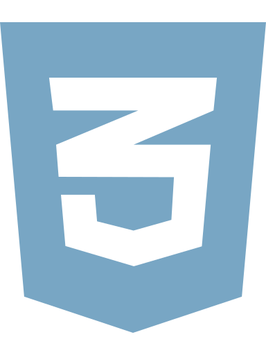

03 / EXPERTISEOne practice.
One practice.
Many disciplines.
Languages, platforms and methods are useful when they fit the work. This is the current toolbox behind my development and operational projects.
01 / DEVELOPMENT
Programming & interfaces
Building the visible and the invisible layers of digital systems.
HTML

CSS02 / DATA
Information & persistence
Structured records, integrations and database-backed workflows.
03 / AUTOMATION
Automation & professional tools
Connecting services, reducing friction and improving how work gets completed.
AI-assisted Development
04 / OPERATIONS
Delivery & infrastructure
Working with version control, deployment, technical communication and resilience.
04METHOD OVER FASHION
Tools can be new.
Standards should endure.
Prompt engineering and AI-assisted coding are part of my workflow, alongside conventional programming. They support exploration and delivery; they do not replace review, testing, architecture or responsibility.
Explore the systems methodology